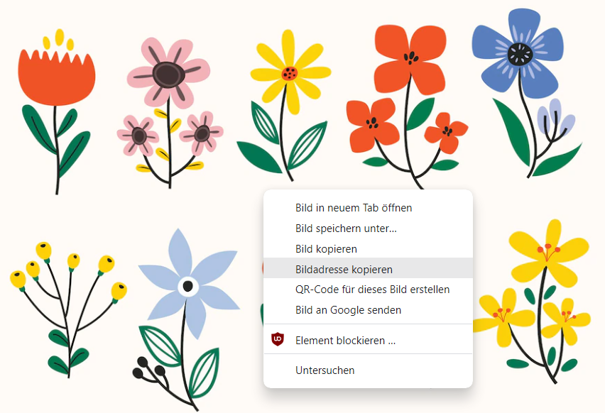

In HTML gibt es viele verschiedene Möglichkeiten die Seite zu gestalten bzw. zu designen.
In diesem Tool findest du erst einmal nur die leichteren Funktionen wie das ändern von Textfarbe, Hintergrundfarbe oder Schriftart.
Aber auch damit kann man schon eine Menge Dinge verändern und gestalten.
Der Designblock im Allgemeinen
Das Tool bietet dir die Möglichkeit bei dem Körper- oder dem Divisionblock einen Designblock einzusetzen. Tust du das, wird im Code hinter dem jeweiligen Block noch "style=" eingefügt, gefolgt von dem was in diesem Block ausgewählt wurde.
Design in Körper und Division
Haben sowohl Körper als auch Division eine Stylevorgabe, überschreibt die der Division die Vorgabe des Körpers.
Es gilt also immer, was in der Division vorgegeben ist und erst wenn hier nichts steht wird im Körper geschaut.
Specialtext
Mittels dem Specialtext-Block kann ein Textbereich anders formatiert werden.
Dafür wird das Start- und End-Tag < span>Textbereich< /span> benötigt.
In diesem Tool kann im Specialtext-Block eingestellt werden:
Kategorie
HTML-Code
Textfarbe
color:
Schriftgröße
font-size:
fett
< b> < /b>
kursiv
< i> < /i>
unterstrichen
< u> < /u>
Bilder
Das Tag < img> wird in HTML für die Beschreibung von Bildern verwendet. Anders als beispielsweise bei Word, wird das Bild selbst nicht direkt platziert, sondern es wird aus einer Quelle geladen.
Für dieses Tag sind zwei Attribute erforderlich. Zum einen das Attribut src, es wird für die Eingabe der Bildquelle verwendet.
Zum anderen alt, welches einen alternativen Text für das Bild definiert.
Eine Besonderheit beim Einfügen von Bildern ist, dass das Tag < img> ungepaart verwendet wird, und somit kein Endtag notwendig ist.
Zusätzlich kann noch die Breite (width=" ") und die Höhe (height= " ") vorgegeben werden, um das Bild zu skalieren.
Hier ist zu beachten, dass bei den Größenangaben die Bilder nicht verzerrt werden. (siehe unten)
Achte auf eine Größenangabe ohne Verzerrung!
So sollten eingefügte Bilder nicht aussehen:
In diesem Tool sind bereits einige Bilder als Blöcke vorgeben, die für die Erstellung der Schulhomepage benötigt werden.
Zusätzlich besteht die Möglichkeit ein beliebiges Bild aus dem Internet einzufügen.
Suche hierzu bei google ein beliebiges Bild und klicke es an. Dann mache einen Rechtsklick und wähle "Bildadresse kopieren" aus.
Füge anschließend die kopierte Bildadresse im Block "Bilderlink" ein. Vergiss auch hier nicht, eine passende Größenangabe zu machen!

Hinweis: Normalerweise muss beim Einfügen von Bildern aus dem Internet aus datenschutzrechtlichen Gründen eine Quelle angegeben werden!
Aber, da in diesem Fall deine erstellte Seite nicht online gestellt wird, kann die Quelle weggelassen werden.
Weitere Möglichkeiten zu designen
Design im Kopf(head)
Es gibt noch zahlreiche weitere Möglichkeiten seine HTML-Seite zu designen.
Man kann zum Beispiel schon im Kopf ein Design für verschiedene Elemente vorgeben.
Wenn man beispielsweise möchte, dass Überschriften (h1) immer rot sind und Absätze (p) immer blau während die Hintergrundfarbe hellblau ist, dann sieht das so aus:
Design in einer eigenen CSS-Datei
Möchte man noch mehr Designvorgaben für z. B. bestimmte Bereiche der Seite, oder alle Knöpfe die es auf der Seite gibt machen, so geschieht das in eigenen Dateien, die auf .css enden.
Man nennt sie deshalb CSS-Dateien. Möchtest du mehr über CSS-Dateien erfahren und wie man sie einbindet, kannst du hier nachlesen.
Oder du siehst dir dieses Video an: